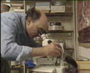
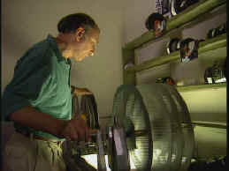
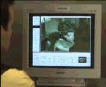
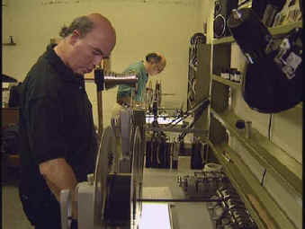
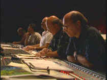
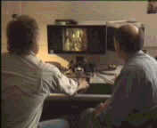

Robert
A. Harris
Tilting
at Hollywood
Interview By Stu
Kobak
The passion
with which Robert Harris approaches a restoration is the same flame that has sent him quixotically
charging at the ever-changing towers of Hollywood. Harris’s weapon is knowledge. Here’s a man
that has seen the mistakes of a generation and continues to fight ignorance that threatens to wreak
havoc on a new generation of films.
Robert Harris is one of the leading authorities and
practitioners of film preservation in the world today. Harris, together with his partner Jim Katz,
has taken on the mission of bringing classic films back to their original beauty. Lawrence of
Arabia was the first project revitalized by Harris and Katz. That does not mean simply blowing
huge amounts of air over the original elements. Often, film preservation takes on the mystique of
determined detective work. Maybe Robert Harris should take on some less than perfect film noirs as
a future project! Assembling diverse existing film elements are often part of the puzzle that makes
up a complete film restoration. The Lawrence of Arabia of project took on huge proportions,
sending Harris on cross-continental trips in search of cinematic truth. Working closely with
Lawrence’s director David Lean, Harris was able to come as close as possible to making the
restored Lawrence Lean’s vision.
The most notable projects after Lawrence of Arabia are the
wonderful Kirk Douglas vision of Spartacus and most recently, My Fair Lady, and long
overdo overhaul of Vertigo. A restoration of
Hitchcock's Rear Window was recently completed and is awaiting its new screen life. Watch
for more Hitchcock films treated by the magic wand of the preeminent restoration team.
Robert Harris grew up around photography from an early age. Harris's
inquiring mind led him to experiment with film emulsions and processing. Harris involvement in film
preservation began with some reconstruction of early Abel Gance films Grand amour du Beethoven
and J'accuse (1937). He then worked with Kevin Brownlow on culling various film sources for
Brownlow's restoration of Abel Gance's Napoleon. From Napoleon to Lawrence
of Arabia was a great leap forward prompted by Harris's love of big screen epics which he feels
are the most endangered Hollywood species of all " Large format - at least the good ones - as
they're the most endangered films. All large format prints were made from the camera
originals," Harris pointed out.
|

|
|
Harris checks out the torn negative on My Fair Lady©Fox Video. |
It's easy to get lost in
sea of film strips, pulled down under by a whirlpool of imperfect images. Does one stop
appreciating the beauty of the sea because of run-ins with polluted waters. At least it appears
that Robert Harris's love of movies, the stories, the styles, the colossal impact of collected
images, remains in tact. Harris's library of films includes 70mm, 35mm, 16mm, laserdisc and now
DVD. Talk to Robert Harris about the movies and you can sense the joy he derives from watching a
good movie. Maybe that's the fuel of passions. A love of the movies and wanting to see them in all
their virgin beauty again. Harris recently watched Columbia's new DVD of A Man for All Season's and waxed
rhapsodic about the merits of the movie. " Just picked up Man for all Seasons -
one of my favorites. The purity of the dialogue is unbeatable. Bob Bolt never wastes a word. It
would be nice though, if Columbia could finally get their act together. It's as if no one there
knows anything about "film." Small, but annoying points, ie. the trailer on Man is
a general release rather than the original trailer." We spoke briefly about the recent
Universal DVD release of All Quiet on the Western Front: "The problem with Quiet
was that a number of different cuts were produced over the years which included re-cutting of
original negative. Also the original negative was probably used to create most prints (domestic.)
What you see is about as good as its going to get. The studio worked very hard to get to this
point." Not every DVD release meets with Harris tough eye. He found High Noon painfully
digitized and lacking a sense of film quality.
I asked Harris if there are dangers lurking around today's films to
anything near the degree that the ravages of time have assaulted our cinema past? The answer is
frightening for movie lovers. " Actually far worse than the studios would have you believe.
Eastmancolor dye fading and the metamorphosis of mag stock into vinegar are a much greater threat
than nitrate decomp. Although, we've all heard many times from many different venues that over 50%
of all early films have bit the dust, one must keep in mind two things: why and do we ultimately
care. The why is generally because the elements were actively junked by their owners as
commercially dead before any concept of history came into play. This includes the studios and
several archives which have historically mishandled film elements. By "do we care" I mean
simply that most of the over 50% wasn't of any great value anyway, including historically. Much of
the films lost from the silent era were so much cheap drivel feeding the theatrical machine."
|

|
|
Working the elements on Vertigo ©Universal |
Undertaking a
restoration is not a job for the faint at heart. Every opened can of film may turn up new surprises
and may even mean a hunt for new elements. What aspect of film deterioration presents the greatest
obstacle to restoration? " Probably picture and sound. Eastmancolor is a major problem as many
films from the 50s-60s are deteriorating badly or are already gone. Yellow layer failure is
probably the greatest problem followed by general fading and mishandling," Harris explains.
"Many sound elements have been junked, leaving us with incomplete or monaural sources. Mag
elements are jeopardized by vinegar syndrome in which the base of the mag breaks down. The problems
with Eastman negative and mag are actually much worse than nitrate decomp. as nitrate when taken
care of with at least reasonable care will last many decades more than safety elements."
|

|
|
Supervising the digital paintbox correction on My Fair
Lady.©Fox Video |
Harris and Katz pride
themselves on overcoming the biggest hurdles on every project they undertake. Each of their
restorations posed unique challenges. "On Spartacus
reconstruction was close to 197 minutes cut without use of
original negative which had yellow layer fading. Separation masters were shrunken and had to be
hand matched on a shot by shot basis for registration," Harris pointed out. Lawrence of
Arabia had its own set of obstacles. "Reconstruction and simply finding picture elements.
Failure of negative splices had original negative falling to pieces and tearing during
restoration," Harris continued. A number of characters had to be revoiced as well on Lawrence
of Arabia. "My Fair Lady had a damaged negative, many dupe shots and no main
titles. Vertigo had a faded original negative, no magnetic elements with exception of music
which was stereo but had full vinegar syndrome. Some music elements lost on attempt at first
preservation. Fading led to experimentation in use of different processing for higher gamma
(contrast) to try to bring color back. Vertigo was the first use of Super VistaVision 70
through a dupe restoration negative," said Harris.
There are so
many films that need help, but there's only so much Harris and company can undertake. " On a
major restoration we spend several months in research and pulling together surviving elements.
Physical restoration can take well over a year. For example, Lawrence of Arabia took 26
months from beginning to end, Spartacus 10
months, My Fair Lady over a year, Vertigo almost 18 months. Rear Window was
begun late summer of 97 and just recently completed," explains the restorer. "My partner
in crime is Jim Katz who runs the LA side. Research is done on both coasts. All elements are
examined on west coast. Once restoration negatives are produced color dailies are cut together over
months on both coasts with all final color timing and sound re-recording done in LA. A number of
people have served as LA assistants, most recently Michael Hyatt, followed by Marlene Noble. The
east coast has been run by Joanne Lawson since day one."
|

|
|
Robert Harris and partner Jim Katz work on Vertigo
.©Universal |
Harris uses a pair of
Norelco AAIIs 35/70mm with projection in 24 or 30 frames per second for screening dailies.
"Interestingly enough, one can run 70mm film on a screen normally set for 35mm and not be
terribly impressed. 70mm really needs extremely large screens to show off its abilities as its
picture doesn't break up," says Harris. " With video its the other way around. Lots of
transfers can look nice on 27 -35 inch set. One example is 2001 on DVD. This looks fine on a
35, but when projected on a 110" diagonal screen it looks horrible. The majority of new
transfers to DVD look amazingly good when projected large," Harris enthuses.
|

|
|
Remixing the original Vertigo tracks©Universal |
Not surprisingly, Robert Harris's home theater
passion is propelled by his love of movies. His main home theater set-up lenses through a Runco
front projector which he thinks almost looks like film on the Stewart Videotek 1.33 gain screen.
Surround sound is decoded and processed through a Lexicon DC-1 and powered by Sunfire Amp with a
Sunfire subwoofer giving everything a lift. Harris uses a Pioneer DVD/Laser Model 91 combi-player
and a Sony VHS machine. His secondary system includes a Mitsubishi 35 inch tube, a Sony Model 7000
DVD player, which Harris calls superb, a Pioneer laserdisc player all running through a Yamaha 3090
Receiver.
Despite his love of home theater, Harris is still a lover of the big
screen. How would he compare the state of projection in movie theaters today with the heyday of
roadshow movies: "Twenty-five years ago we still had many huge screens, with 5 channels of
sound behind them and all drivers working perfectly well. There are some multiplexes which do quite
a nice job of projection. THX has helped quite a lot, but if you go beyond venues like the Crown,
most of the Sony theatres and places like the Uptown in DC, what were the old Plitts in Century
City, the Castro in SF, etc, and the quality of projection can easily become a joke. " Harris
explains that we need good lamphouses, well-tuned projectors. He points out that there used to be
many more projectionists who could tear down a machine and keep it running at its potential.
"It's come down to a point where in many multiplexes the same person makes change for popcorn
and then checks focus -- in 14 houses," laments the film perfectionist.
|

|
|
Harris oversees a transfer .©Fox |
While men like Robert
Harris toil in the trenches battling to save film's history, we can also help support classic
cinema by seeking out vintage films and calling for the best video presentations available. You can
learn lots more about the fine work of film restorers Robert Harris and Jim Katz by listening to
the second audio commentaries on the special edition DVD of My Fair Lady, in the documentary
that is part of the My Fair Lady Widescreen Collector's Edition, the second audio commentary
on the laserdisc or DVD special edition of Vertigo or on the second audio of the Criterion
Collection edition of Spartacus. |
|
|
|

The
Movie Poster Archive includes extensive poster images from the films of stars like Susan Hayward,
Kirk Douglas, Katharine Hepburn and many more. Our featured star is Lana Turner.

The Feature Archive
has articles ranging from Akira
Kurosawa to Blonde Bimbos.
Movie Rage: Death in the Aisles
Everyone knows what it feels like to get angry at the
movies these days. Here's a humorous but not so delightful view of big screen misery.
Gotta
Dance
Fred and Ginger tapped their way into the hearts of movie fans everywhere. Stu Kobak takes a look at some of those dance
movies that gifted audiences toe-tapping pleasure. Click on the image to get in on the beat.
Puttin on the
Ritz

Fred Astaire and Cyd Charisse bring Silk Stockings to life, a remake of Ninotchka, one of many
films successfully turned into musicals by the Hollywood dream factory. Read all about remakes into
musicals by clicking on the divine dancers.
Sturges Emerges
Preston Sturges was Hollywood's resident comic genius for more than a decade. His movies are
timeless. Click on his image to read all about it.

Is North by Northwest Hollywood's definitive exploration of the nose? From schnozzles to
beezeers, film mavens make the most of the foremost. Click on Mount Hitchcock for more.
 
DVDPlanet is the DVD
incarnation of legendary laser retailer Ken Crane's. Deep discounts and serious service.
 
The Big Combo has
style to spare in reviewing films and producing feature articles. Check out their special
"Lingo" section.

Reviews of affordable remote controls in the market place. Codes
and tips as well.

Looking for information about widescreen movies and hardware. The Widescreen Movie Center
is the place to go.

The National Film Preservation Foundation (NFPF) is the nonprofit organization created by the U.S. Congress to save
America's film heritage.

News, information, features about current films in theaters and in the
pipeline. Easy to use interface.

The official site for information about the great comic director. A treat for connoisseurs of
classic Hollywood madcap.
Take a look at the merry images of America's gift to
the movies: Hollywood Musical Posters are featured from The Movie
Poster Archive.
|